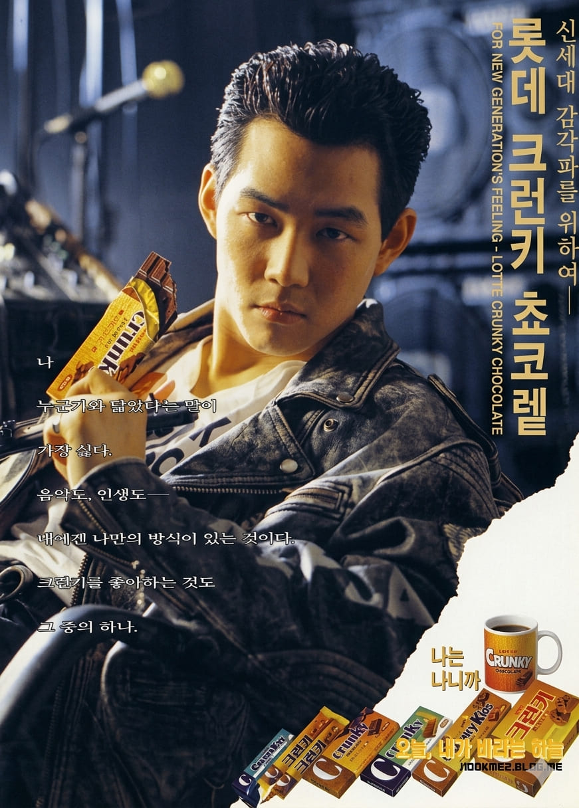

이정재
난 누구하고 닮았다는 말이 제일 싫다.
음악도, 인생도.
광고 정보
- 광고 연도 : 1993
- 광고 모델 : 이정재
- 브랜드 : 롯데제과
- 제품명 : 크런키
- 대표 문구 : 난 누구하고 닮았다는 말이 제일 싫다.
광고 모델 소개
이정재는 1990년대를 대표하는 대한민국의 배우이다. 드라마 「모래시계」를 통해 폭발적인 인기를 얻으며 청춘스타로 자리매김했으며, 세련된 외모와 도시적인 이미지로 많은 사랑을 받았다.
제품 소개
크런키는 롯데제과의 대표 초콜릿 브랜드로, 바삭한 크런치 식감과 달콤한 초콜릿 맛으로 1990년대 젊은 소비자들에게 큰 인기를 얻었다.
광고 특징 및 당시 반응
광고는 이정재의 세련되고 개성 있는 이미지를 활용해 젊은 세대의 감성을 표현했다. 광고 속 대사는 당시 소비자들에게 강한 인상을 남기며 크런키를 감각적인 브랜드로 인식시키는 데 기여했다.
1990년대 광고 문화
1990년대 광고는 제품뿐 아니라 라이프스타일과 개성을 함께 전달하는 방향으로 변화했다. 인기 배우와 청춘스타를 활용한 광고가 늘어났으며, 이정재 역시 당시를 대표하는 광고 모델 가운데 한 명이었다.